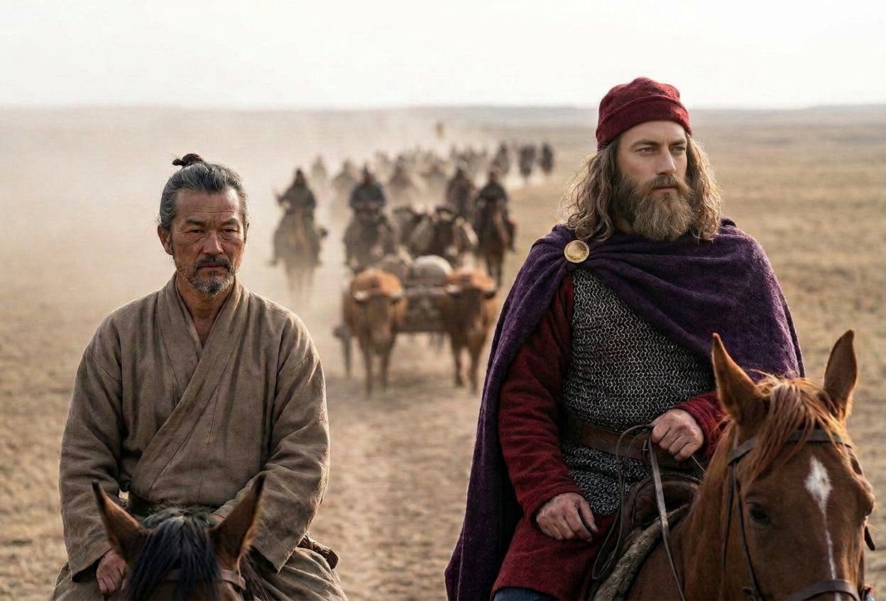
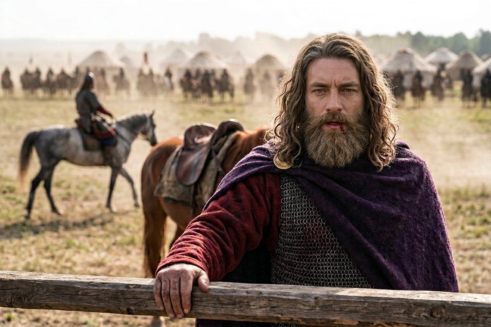
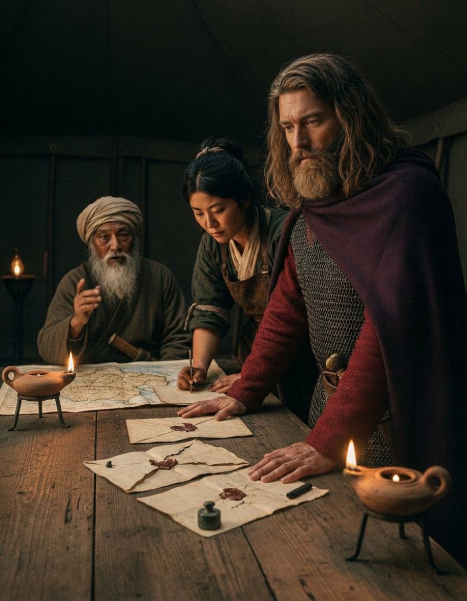
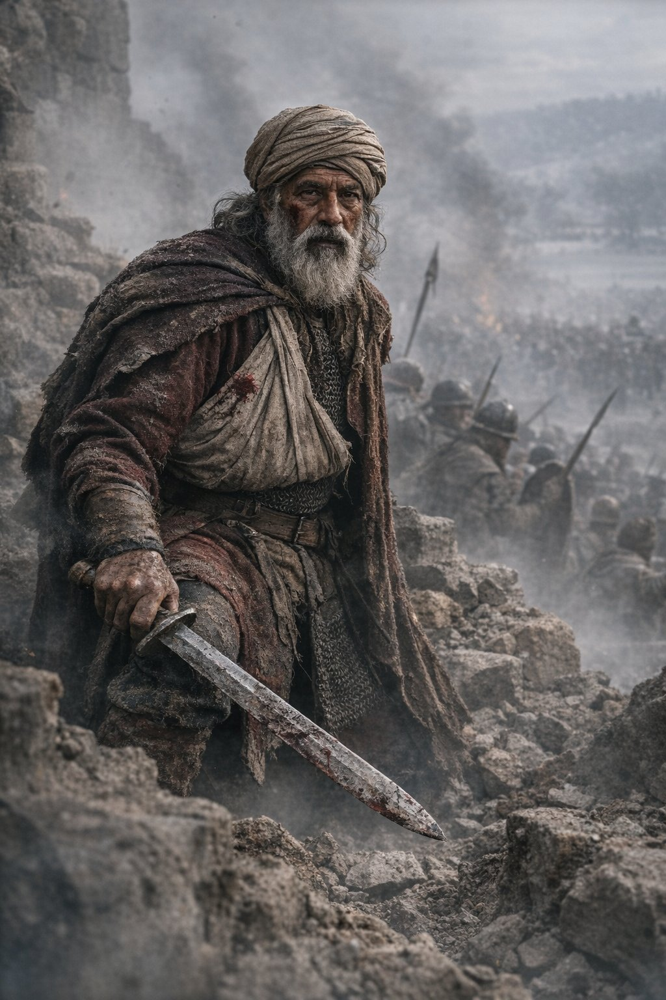
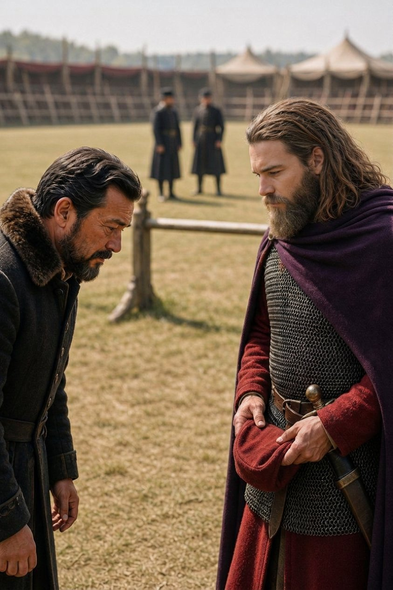
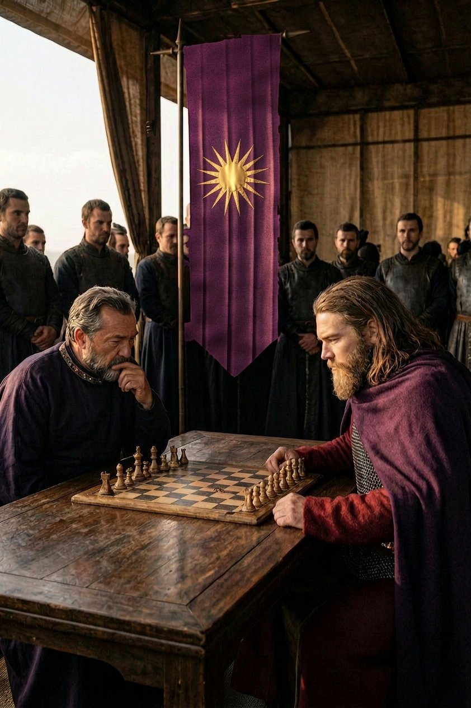
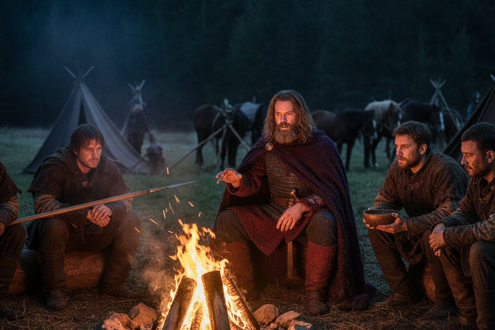
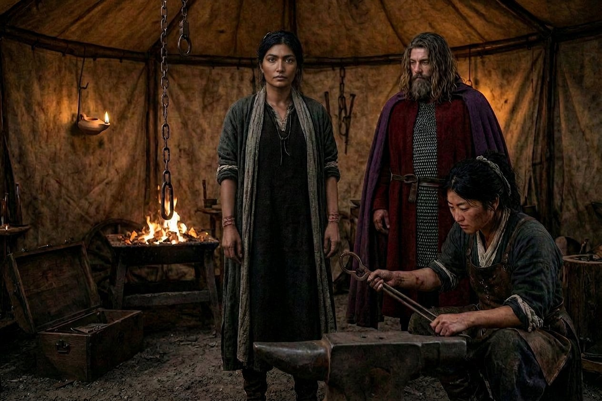

The road east
The letter I wrote about at the end of the last chapter sent this company nine hundred miles east to be looked at, and I want to put the accounting of it at the front of this one, because everything that follows is the arithmetic of a name.
A tournament is not a war and it does not pay like a war. What it pays is reputation, and reputation is the only thing in this trade that a company can carry without feeding it. A lord who has never seen us will hire us on the strength of a name he heard at a lord's table; a lord who has seen us beaten in the lists will not hire us at any price. So a company that is doing well goes to the lists the way a merchant goes to a fair: to be seen, and to be seen winning.
Serdosk is on the Volga, in the steppe country, six days' ride from anywhere a Greek would call a town. We went by Kyzyl Jar and the Khoper and a place called Buri-chai, and it took eleven weeks, and it was the first time this company had been east of Persia since 877.
I did not want to go. I said so at the officers' table in the first month, and I said it with numbers, which is the only way I ever say anything. Eleven weeks out and eleven weeks back is five months in which nobody pays us to fight, and five months of fodder for six hundred horses in a country where fodder is bought from men who can see an army coming. I said the company would come back poorer and stranger.
The Captain heard me out, which he does, and then he said: Chrysogonos, how many lords in the world know our name because they have been in a room with us? Eleven, he said, before I could answer. And how many could know it if we win at Serdosk? And he did not answer that himself, and did not need to.
That is the whole of the argument for the next two years of this book. I lost it. I want that written down, because I was the one who did the sums, and the sums were right, and the sums were not the point.
Serdosk
The tournament was held on the Volga steppe in the fourth month and the fifth, on a meadow the size of a small county, with three hundred tents on it and a horse fair and a market and a great many people who had come four hundred miles to stand in a field and shout.

Chieftess Nulzyava held it. She was not a queen and would have been insulted to be called a duchess; she was the woman whose herds and whose riders that stretch of the river belonged to, and she held a tournament the way a rich man gives a feast, which is to say to be seen giving it. She had four hundred horse of her own, and a tent of white felt with a floor of carpets, and she greeted the Captain in Greek, which he had not expected, and which put him on his guard for the rest of the summer.
I will explain how the lists worked, because the book has not had a tournament in it yet and a reader who does not know the forms will think the company was fighting duels in a field for no reason.
There were contests, and a man entered each of them separately and paid a fee for each. There was the duel: single combat on horseback with blunted lances and rebated swords, run as a bracket until one man was left. There was the melee, which is two teams of thirty and a great deal of noise. There was the board game, which is the Emperor's own game and which half the world now plays. And there were the horse races and the archery, which the company did not enter, because a company that enters the archery is telling everyone it has nothing better to do.
The company entered the duel with nine men, which was more than any other company there, and the melee with thirty, and the board game with two: the Captain, and Matako, who plays it the way she does sums.
Now the bracket, since that is what the record kept and it is the only part of that summer with dates on it.
On the twenty-ninth day of the fourth month, five days before the first of his own bouts, the Captain placed a sum on himself in the duel, at a price that the bookmaker gave him without argument because at that point nobody in that meadow had heard of him. He put down two hundred of the company's gold and did not tell me until it was done, and when I asked him why he had not told me he said: because you would have made the case against it with numbers, and you would have been right, and I was going to do it anyway.
He fought his first bout on the third day of the fifth month, against a Tarmaç of the Volga country, and won it in three passes, the third by unhorsing. He fought his second on the fifteenth against a Greek called Nikodemos who had been in the lists of three emperors, and it took eleven passes and the last one on foot with the sword, and it was the best piece of riding I have ever seen out of a man who learned to sit a horse at twenty-nine.
And Shiina, who is the best-looking man in the company and knows it and has never in his life done anything by halves, beat a Paksyay of the Khazar country in the second round and then went out to a rider from the east called Iltabar Ertekin, who by the end of the month had beaten everyone.
Iltabar Ertekin won the duel on the twenty-eighth day of the fifth month. The Captain fought him in the final and did not win it. I watched the whole of it from the rail with the bookmaker's clerk beside me, and I will write what I saw and not what the company says happened.
Iltabar Ertekin was a rider of about thirty, on a grey, and he had one thing the Captain did not have, which was a lifetime in the saddle before he could read. In the pass before the last the Captain's lance took him high on the shield and it did not move him at all, and I have seen that man's lance take men out of the saddle before and it did not move this one. The last pass was the Captain's to lose and he made the mistake a clever man makes against a better rider: he tried to do it properly. Ertekin did not try to do it properly. He put the lance where the Captain's shield was going to be, and the Captain went into the grass at the gallop, and the whole meadow stood up.
He got up on his own, which mattered more to the company than the prize would have, and he walked back to the rail and said, to me, in Greek: he is better than I am. I have never heard him say that about anyone, and there were about twenty of our men within hearing, and they were proud of him for it, and I have thought about that for four years.

So: not the champion. Second in that field, and the wager laid five days before the brackets were drawn paid at the price of a man nobody had heard of, and it paid better than winning the duel would have. I worked it out on the cart on the way home: he cleared four hundred and ten gold by coming second and would have cleared two hundred and sixty by winning. There is a lesson in that which I have never liked.
We came back west in the sixth month, by the same road, eleven weeks, and the company came back poorer in fodder and richer in one thing that does not show on any ledger: by the seventh month, four lords in four countries had heard our name from somebody who had been in that meadow.
The four wars
In the ninth month, in the camp, four letters arrived within eleven days of each other, and the company did something at that table which I had never seen a company do, and which is the reason this chapter has the shape it has.
Here are the four, and the reader should look at them together, because they are the arithmetic of this trade and nothing else in this book shows it better.
Sophia of Iași was pushing a claim on Galați and wanted us as attackers, for a fee and a share, and the war was expected to last a year and did. Feodosia wanted Marmaros taken and offered a great deal of money for a war that everybody in that country knew could not be won, and we took it anyway. Konel the Noble was defending Ladyzyn and wanted us as defenders, which is the work this company was born to and hates, and the pay was poor and the odds were worse. And Pál was defending Szabolcs and paid in advance, in silver, which should have told us something.
Now, a company of twenty-five companies of soldiers cannot fight four wars at once. It can only do it by dividing, and dividing is how a company dies, because the half that is beaten is beaten without the other half, and the news of the defeat travels faster than the news of the victory.
The Captain divided anyway. Four columns, each with a captain of its own and a piece of the horse: Petre took Galați, Atenulf took Marmaros, Virupaksha — who was seventy years old and had been asking for something to do — took Ladyzyn, and the Captain took Szabolcs himself. I went with the Captain. Matako went with Virupaksha, because the old man could not shoe a horse and would not admit it.

I did the arithmetic before they left, on the back of the Szabolcs letter, and I have kept the paper. Twenty-five companies, four wars, one of them nine hundred miles from another: the company would be four companies for a year, each of them too small to do what it had been hired for, and each of them being paid as though it were the whole.
We were not beaten in the field in any of the four. That is the thing the company says and it is true. What happened was worse and cheaper: Galați was won in the last month of 887 after a war that took two years and made nobody famous. Marmaros failed, and Atenulf came back with two-thirds of his men and a letter from Feodosia that was not worth the parchment it was written on. Ladyzyn was lost in the ninth month of 886, and Virupaksha came back from it with a broken collarbone and the only good story of the whole year, which I will not print here because he tells it better than I can. And Szabolcs was lost in the third month of 887, which is in the next chapter and which the Captain has never once discussed with me.
One win in four. Two years and four columns and eleven hundred miles of marching, and the ledger says the company was paid for all four and the name of the company was burned for three of them.
I wrote that in the book at the time, in the way I write things, and the Captain read it, because he reads everything I write before it goes in. He said: write this under it. There is no such thing as a company that wins everything, and there is such a thing as a company that is still here in ten years. And then he said: we were paid.
I wrote it under it. I have looked at that page a great many times since. It is the most honest thing anybody in this company has said about the trade we are in, and it is also the sentence of a man who has begun to think of a company as a thing that must survive him.
Yehudis
One person joined the company in 885 and I have not mentioned her yet, because she joined in the fourth month while we were on the road east and a company on the road is not a company, it is a column with opinions.
Yehudis came to us at Kyzyl Jar, alone, with a mule and a chest of medicines and instruments, and asked for the physician's place. We had not had a physician since Tsunenao died in the fourth month of 875, and in the eleven years since then this company had been doctored by Matako with a needle and a saw and by whichever man in the ranks had the steadiest hands, and we had buried about ninety men.
She was thirty-four and she was out of the Jewish quarter of a town on the Caspian road, and she had been physician to a lord's household until the lord changed his mind about having one, and she had walked out with her chest and her mule and her instruments and had been working her way west for a year.
The Captain took her on in eleven minutes. He asked her three questions, and the third was: what will you not do? And she said: I will not cut a man for a stone and I will not lie to a family about a wound I know is mortal. And he said: the first is a pity and the second is worth more than the medicines. And that was the interview.
Her effect on the company is in the next chapter's count and not this one, because a physician's effect is a number of men who are alive and there is no way to write the names of the men who are not dead. In the first year she lost eleven of the wounded and I had expected to lose thirty, and when I told her that figure she said: you did not lose thirty in the years before either, you lost them and did not count them, and there is a difference and it is not in my favour. She is like that. She and Matako get on.
Ladyzyn
I said I would not print Virupaksha's story and I am going to print it, because a chapter about four wars that does not contain a single field is not honest, and because he is seventy years old in this year and I am not going to say how many fights he has left.
Ladyzyn was the defending contract and the worst of the four, and everybody on the officers' table knew it in the ninth month of 885, including the man who took it. A castle on a river in the Hungarian country, held for Konel the Noble, against a neighbour with four times the men, with a fee that would not pay the fodder. Virupaksha asked for it. He had been in this company since before Narwar and had spent the last three years mending harness and teaching boys to stand, and he stood up at that table, seventy years old, in a turban that was forty years old, and said: I will take the castle, and I will hold it longer than the contract says, and you will pay me the fee and no more.
He held it from the twelfth month of 885 to the ninth month of 886, ten months against four times his men, and he lost it in the end because a wall fell down and not because anybody beat him. He came out with a broken collarbone and eleven men dead and the garrison's honour, which is not a thing you can spend, and he came into the camp at Tarnovgrad in the tenth month and the whole company stood up.
The story he tells is about a pig. He will tell it to anybody. It has a wall, a pig, two boys, and a Hungarian who wanted his turban, and it takes a quarter of an hour, and the quarter of an hour is worth more to the company than the eleven men cost it, which is the sort of sentence I have begun to write and do not like.

Kallipolis
In the third month of 886 the company went into winter quarters at Kallipolis, on the neck of the Chersonese, where the road to Thessaloniki leaves the coast, and stopped being a company for a season and became a spectacle.
The Emperor was holding a tournament there. Basileios, whom the soldiers called the Collector, had held one the year before and would hold one the year after; it was the largest gathering of armed men in the Roman world that year, and it was held at the Emperor's expense on the Emperor's ground, and every man in it was the Emperor's guest and the Emperor's subject and under the Emperor's eye, and no two of those are the same thing.
I had never seen the court. I am a Roman Greek and I had spent my life in companies, and I had a Greek's opinion of the palace, which is the opinion of a man who has never been inside it. It is bigger than you think and smaller than it needs to be. There is a room where a man waits three hours to be looked at for one minute, and there is a corridor where a clerk with a wax tablet decides the order of the waiting, and the clerk is the second most powerful man in the building and has a coat with one moth hole in it.
The company was given ground east of the town and did what it always does, which is to dig. Four days of latrines and horse lines and a forge pit before the Captain would let a man near the lists, and the Emperor's own marshal rode over on the second day to ask why the Distinguished Host was digging instead of drinking, and the Captain said: because in eleven days there will be eight thousand men in this field and one well.
The contests ran from the fourth month to the eighth. The company entered the melee and lost in the second round to a company of the Emperor's own household, which is not a disgrace and which the men did not enjoy. Shiina entered the duel and went out in the fourth round to a Bulgarian who was better than he was. Matako entered the board game, which surprised everybody but me, and was out in the third round, and took it well, and has never entered a contest since.
And the Captain entered the board game, and in the eighth month he won it in front of the Emperor, and that is the only thing this company has ever won at that court. The rest of this chapter is about how, and about what a man called Bajan did on the sixteenth day of the seventh month.
Matako's page
This page is hers and I have not touched it.
I am going to write about the board game because I am the only person in this company who has watched him play it from the other side of the table, and because he beat me, and I want it written down that he beat me when I had been playing it for eleven years and he had been playing it for four.
It is a game of squares and pieces. You take ground and you hold it. A piece that is alone is worth nothing and a piece that is supported is worth three, and the whole of the game is that you cannot be strong everywhere, so you choose where to be weak and you make the other man spend himself finding out where.
He does not play it like a soldier. The officers play it like soldiers: they go for the middle and they like the sound of pieces coming off the board. He plays it like a merchant: he counts what each piece is worth in the position, not what it is worth on the board, and he will give away four pieces in a corner to take one in the middle and be right about it, and he does not care at all what it looks like while he is doing it.
On the fourth day of the seventh month he played me in a practice round and took my right side apart with a bishop's worth of pieces and never once moved anything into the middle of the board. When it was over I said: you played that like a man buying wool. And he said: I learned this game from men who buy wool, and everything I know about war I learned from the same men, and the difference between a battle and a market is that in a market both sides go home.
I have written that down because it is the best thing anybody in this company ever said about what he does, and because it is the thing that made Bajan's behaviour on the sixteenth so stupid.
Bajan
Count Bajan was a Bulgar of about forty with a claim on a duchy and an income from three counties, and he had entered the board game that summer because an emperor's tournament is where a man with a claim goes to be seen with the right people.
He had met the Captain twice before the sixteenth, both times politely. What he thought of him I do not know. What he did on the sixteenth I know, because the Emperor's own steward said it aloud in front of nine witnesses, which is the way these things come out.
The board game was run as a knockout, four days to a round, and by the seventh month there were nine men left and the Captain was one of them and Bajan was not, having gone out in the previous round to a court Greek with a bad cold. On the sixteenth, the morning of the round, Bajan sent a man to the steward of the lists with a purse and a request: that the Captain's board be set with one piece missing from his set, so that he would either forfeit or play a man short, and that the steward, if asked, say the set had come from the Emperor's own store.
The steward took the purse. The steward also, that same morning, went to the Emperor's chamberlain and told him the whole of it, purse and all, because a steward of the Emperor's lists who takes a Bulgar's money to embarrass a guest is a man who has just discovered exactly how much trouble he is in.

On the seventeenth the Emperor disqualified Count Bajan from the tournament. Not from the board game only; from the whole of it, all contests, and his name was struck out of the list and his ground given to somebody else and he left the field within a day, and the Emperor's clerk wrote one line about it which I have copied here in the Greek because it is the coldest sentence I have ever read out of a chancery: *removed for conduct unbecoming the lists, and the reasons not published.*
I have thought about that for three years. It is a sentence that gives a man nothing to answer. Bajan could have denied a specific charge. He could not deny that sentence.
And then the thing happened which the reader has already been told, at the end of the last chapter, and which I did not understand at the time at all: three years later the Captain took up that man's claim on a duchy and fought a war for it. I asked him about it once, in 887, on the road, and I got one sentence, which belongs to that year's chapter and not this one. But I will say this here, because I saw Bajan on the day he left and I have never forgotten it: he was not ashamed. He was frightened and he was polite, and he bowed to the Captain at the gate of the field, and the Captain bowed back.
The board game
The Captain was in the semi-final on the first day of the eighth month against Count Dumitru, who was a Wallachian of the Emperor's party, and beat him in nineteen moves, and the company's men, who did not understand the game and had come to shout, shouted anyway.
The final was on the fourteenth, in the Emperor's own pavilion, with about sixty people in it. The Captain's opponent was a Greek of the court whose name I have written down somewhere and lost, and I am not going to invent one, because in a book full of invented things a lost name is a small honesty.
I cannot report the game. I do not play it well enough to see what happened in nineteen moves, and the men who were there and did play it have given me three accounts that disagree about everything except the end. What I can report is what I saw, and there are three things.
The first is that the Emperor watched. He did not watch the way an emperor watches, which is to be seen watching. He sat with his chin on his hand and moved his own fingers on the arm of the chair, following the pieces, and by the seventh move he had stopped looking at the Captain and was looking only at the board. Whatever else Basileios the Collector was, he was a man who had spent his life getting money out of provinces, and he knew what he was looking at.
The second is that the Captain won, and that when he won he did not look pleased. Somebody who has watched a man win an unhorsing can tell the difference. He had the face he has when a cart comes out of the river, which is not triumph; it is a man checking a thing is finished.

The third is that the Emperor spoke to him afterwards, and I was close enough to hear it, being the officer on his right. His Majesty said: the game is mine, and I made it to teach boys that a treasury is a field of battle, and in eleven years I have watched four hundred men play it and not one of them played the corners as you did. And the Captain said: I was a merchant's son before I was anything else, Your Majesty. And the Emperor said: so was I.
I have thought about that exchange more than about the wolf. Two men in a tent, both of them out of a merchant's house, and one of them had an empire and the other had twenty-five companies and a cart, and neither of them said one word about the gods.
The company went out of Kallipolis in the eighth month with a purse, a letter of the Emperor's household, and a thing that no ledger holds, which is that for the rest of that year, in the mouth of every officer in the Roman army who had been in that pavilion, our captain was the man who had beaten the court at its own game.
The stag hunt
In the ninth month we went north into the Bulgarian country, to Tarnovgrad, because a lord there had asked for the company's presence at a hunt and a lord who asks for your presence at a hunt is a lord who is deciding whether to hire you in the spring.
A stag hunt in that country is not a sport. It is four days of riding with three hundred men and a line of beaters a mile wide, and it exists so that a lord can see how other men's officers handle horses, and so that other men's officers can see how much a lord is willing to spend. Our men were there for eleven weeks and shot four stags and a great many boar and lost one horse to a bog and one man to a fall, and the Captain did the thing he does at every hunt, which is to stand at the back of the line and watch where the ground goes.
On the nineteenth day of the tenth month he did a thing that cost the company money and which I did not understand until I had done the sums twice.
The hunting ground was the lord's; the villages in it were not. There were four hamlets in that stretch of country whose people had the right to forage and to run pigs in the mast, and a hunt that comes through a wood in October with three hundred riders will put an arrow in a boy in a hedge before the second day is out, and there is no lord in the world who cares, and there is no company in the world that pays for it.
The Captain sent for the four headmen and paid them, out of the company's purse, to keep their people out of the woods for the eleven weeks: a sum that came to about the price of nine horses. The men thought it was soft. Petre, who is not soft, asked him in front of the officers what the money was for, and the Captain said: for the company's name in a country we will be fighting in within two years.
He was right, and it was not the whole of why he did it, and I have never asked him the rest. I have been in eleven companies and I have seen four men killed in woods by their own side's hunters, and nobody was ever paid a penny for any of them.
On the twenty-sixth, at the end of the last day, he told a lie.
I was there for it, which is why I am able to write it down. We were on the ride home, about forty of us, and somebody asked him what he had seen in the far wood in the morning, and he said he had seen a beast. He described it. It had a white head and a black mane, he said, and it went on four legs and it was taller than a horse, and it went through the thorn in front of him at forty paces and he had not had a lance in his hand.
The men believed it for about an hour. Then one of the beaters said in the camp that no such beast had been seen by any of the eighty men in that wood, and the thing became a story, and by the second day the company had decided that the Captain had seen it, and by the fourth day there were two men who had seen it as well.

I asked him about it on the road, in the way I ask about things, which is badly. I said: there was no beast. And he said: no. And I said: why? And he looked at me and said: because in six weeks I am going to ask two thousand men to stand in a line in a country none of them has seen, and a man who tells them a story they can argue about is a man they will talk about in the dark instead of being afraid.
I have written that answer down exactly. I do not know whether it is the truth or whether it is the reason he invented afterwards, and I am not going to decide it for the reader. What I know is this: in the winter of 886 the company began to tell stories about its captain, and the captain helped.
The irons
Dehanagadevi had been in irons since the ninth month of 879, when she killed a man of this company. I have written about the killing in another chapter and I am not going to write about it again. What I have to write here is the chain, because in the eleventh month of 886, in the camp at Tarnovgrad, the chain came off.
There was no trial and no ceremony and no announcement. Matako was sent for with her irons and her tongs, and the Captain came to the forge cart himself, and I was there because I keep the book and because Matako had asked me to be there, which she had never done before.
Dehanagadevi came in with the wrists first and the throat and the chain to the ankle, as she had come in for seven years, and she stood where she was told to stand, and the Captain said: Matako, take them off. And Matako took them off, one at a time, and the wrists were the worst of it, and it took her a quarter of an hour, and nobody said anything at all in that tent for the whole of it.
Then the Captain said to Dehanagadevi: you are not forgiven and you are not released. You are in this company and you are not in irons, and if you run I will not send anybody after you, and if you kill another man of mine I will kill you myself, and there will be no trial and no sentence and no chain.
She said one thing. She said: my hands are cold. And he said: they will be for a year. And he went out.

I have thought about that scene more than any other in this book, and I am going to set down what I think and mark it as mine, because there is no evidence for it.
I think he took the chain off because in the eighth month of that year an emperor had put out his hand to him in a tent and called him a merchant's son, and a man who has been forgiven something by the great will begin to hand it on within the year. I think he did it in the eleventh month and not earlier because a company that is losing wars, which we were, cannot afford an argument about justice, and a company that has just been seen winning in front of the Emperor can.
And I think he was afraid of her, and had been for seven years, and that the fear was the reason for the chain and not the murder, and that on the day the chain came off he looked at her the way a man looks at a wolf.
That is my opinion. It is not evidence and it is not in the roll. Matako, when I asked her afterwards what she thought it meant, said: it means she is cold, and went back to her anvil.
The count of 886
So: the count, at the end of the second year of this volume, and it is a count of a company that has been paid and has not won.
Twenty-five companies still, and the roll of the household at forty-one, which is one fewer than it should be because a man died at Ladyzyn of a wound that would not close. Two of the four wars are lost and one is on its way to being lost and one has not yet been won. The company has been seen at Serdosk and seen at Kallipolis and its captain has a name in four countries and a place, if he wants it, in the mind of an emperor.
He is thirty-six years old. I put that in every year and I will go on putting it in, because it is the only number in this book that never stops being interesting: a man of thirty-six with a cart, an anvil, a chest of two gods, forty-one companions and no land at all.
I have one more thing to write and then the year is done.
In the twelfth month, in the camp, he sent for me and asked me to fetch the chest. It took two men to bring it into the tent with the snow on it, and he opened it and took out the two bundles of leaves that are his father's book, and he sat with them for an hour and did not unwrap them.
Then he said: Chrysogonos, what does a claim cost? And I said: it depends on the claim. And he said: a claim on a duchy, without the man who holds it, without the money, and with the man who wants it being one you would not buy a horse from. And I said, being a soldier and a fool: nothing. And he said: no. It costs an army, and it buys a man who owes you, and there is no other way in the world to make a lord without being born one.
I did not understand him that night. I understand him now, and by the time the reader has come through the next chapter he will understand it too, and he will know why the captain of this company, in the third month of 887, went to war for a Bulgar count who had tried to ruin him at a board game in front of an emperor.